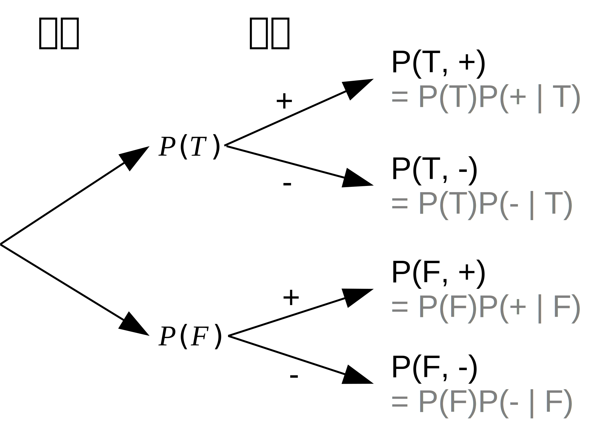

<!doctype html>
<html lang="en">
    <head>
        <meta charset="utf-8">
        <title>RevealJS : /media/pika/Workbench/workspace/writing/Bayesian_inference/Bayesian_inference.md</title>
        <link rel="stylesheet" href="css/reveal.css">
        <link rel="stylesheet" href="css/theme/black.css" id="theme">
        
       
        <!-- For syntax highlighting -->
        <link rel="stylesheet" href="lib/css/Zenburn.css">

        

        <!-- If the query includes 'print-pdf', use the PDF print sheet -->
        <script>
          document.write( '<link rel="stylesheet" href="css/print/' + ( window.location.search.match( /print-pdf/gi ) ? 'pdf' : 'paper' ) + '.css" type="text/css" media="print">' );
        </script>

        <style type="text/css">
            @page {    
              margin: 0;
              size: auto; 
            }
        </style>

        <script>
         if(window.location.search.match( /print-pdf-now/gi )) {
           window.print();
         }
      </script>

    </head>
    <body>

        <div class="reveal">
            <div class="slides"><section  data-markdown><script type="text/template"><style>
.reveal h1,
.reveal h2,
.reveal h3,
.reveal h4,
.reveal h5,
.reveal h6 {
  text-transform: none;
}
</style>


## Introduction to Bayesian inference

<small>2018.06.04</small>

杜岳華
</script></section><section  data-markdown><script type="text/template">
## Outline

* Bayes' theorom
* Bayesian inference
* Maximum likelihood estimation
* Maximum a posteriori
* Markov chain Monte Carlo
</script></section><section ><section data-markdown><script type="text/template">
## Bayesian statistics


Thomas Bayes (1701–1761)
</script></section><section data-markdown><script type="text/template">
## Conditional Probability

$P(y \mid x) = \frac{P(x, y)}{P(x)}$

<div class="fragment">$P(好心情 \mid 晴天) = \frac{P(晴天, 好心情)}{P(晴天)}$</div>

<div class="fragment"></div>
</script></section><section data-markdown><script type="text/template">
## Description of cause-effect

$P(y \mid x)$

<div class="fragment">$\LARGE x \rightarrow y$</div>

<div class="fragment">$\LARGE 因 \rightarrow 果$</div>

<div class="fragment">$ex. 晴天 \rightarrow 好心情$</div>
</script></section><section data-markdown><script type="text/template">
## Bayes' theorom

$P(y \mid x) = \frac{P(x, y)}{P(x)}$

<div class="fragment">$P(x, y) = P(x)P(y \mid x)$</div>

<div class="fragment">$= P(y)P(x \mid y)$</div>
</script></section><section data-markdown><script type="text/template">
## Bayes' theorom

$\LARGE P(y \mid x) = \frac{P(y)P(x \mid y)}{P(x)}$
</script></section><section data-markdown><script type="text/template">
## Example

檢驗方法

| 疾病\檢驗 | 陽性（+） | 陰性（-） | Total |
| -------- | ------ | ------- | ----- |
| 有病（T） |     89 |      11 |   100 |
| 沒病（F） |      9 |     152 |   161 |
| Total   |     98 |      163 |   261 |
</script></section><section data-markdown><script type="text/template">
## Example

<div class="fragment">$\large 疾病 \rightarrow 檢驗$</div>

| 疾病\檢驗 | 陽性（+） | 陰性（-） | Total |
| -------- | ------ | ------- | ----- |
| 有病（T） |   0.340 |   0.043 | 0.383 |
| 沒病（F） |   0.035 |   0.582 | 0.617 |
| Total   |    0.375 |   0.625 |   1.0 |

$P(疾病, 檢驗)$
</script></section><section data-markdown><script type="text/template">
## Example

對病人來說，檢驗結果為陽性，有多少機率是有病？

<div class="fragment">$P(疾病=T \mid 檢驗=+)$ = ?</div>

<div class="fragment">$\large P(T \mid +) = \frac{P(T)P(+ \mid T)}{P(+)}$</div>

<div class="fragment">$\large P(T \mid +) = \frac{P(T)P(+ \mid T)}{P(T)P(+ \mid T) + P(F)P(+ \mid F)}$</div>
</script></section><section data-markdown><script type="text/template">
## Example

| 疾病\檢驗 | 陽性（+） | 陰性（-） | Total |
| -------- | ------ | ------- | ----- |
| 有病（T） | $P(T, +)$ |      | $P(T)$ |
| 沒病（F） |           |      | $P(F)$ |
| Total   |   $P(+)$ |  $P(-)$ |   1.0 |
</script></section><section data-markdown><script type="text/template">
## Example


</script></section><section data-markdown><script type="text/template">
## Example

$P(T \mid +) = \frac{P(T)P(+ \mid T)}{P(T)P(+ \mid T) + P(F)P(+ \mid F)}$

<div class="fragment">$P(T \mid +) = \frac{0.383 \times P(+ \mid T)}{0.383 \times P(+ \mid T) + 0.617 \times P(+ \mid F)}$</div>

<div class="fragment">$P(T \mid +) = \frac{0.340}{0.340 + 0.035}$</div>

<div class="fragment">$P(T \mid +) = 0.907$</div>
</script></section><section data-markdown><script type="text/template">
## Example

對病人來說，檢驗結果為陰性，有多少機率是沒病？

$P(疾病=F \mid 檢驗=-)$ = ?
</script></section><section data-markdown><script type="text/template">
## Example

$P(F \mid -) = \frac{P(F)P(- \mid F)}{P(T)P(- \mid T) + P(F)P(- \mid F)}$

<div class="fragment">$P(F \mid -) = \frac{0.617 \times P(- \mid F)}{0.383 \times P(- \mid T) + 0.617 \times P(- \mid F)}$</div>

<div class="fragment">$P(F \mid -) = \frac{0.582}{0.043 + 0.582}$</div>

<div class="fragment">$P(F \mid -) = 0.931$</div>
</script></section></section><section ><section data-markdown><script type="text/template">
## Bayesian Inference

$\large x \rightarrow y$

$\LARGE P(y \mid x) = \frac{P(y)P(x \mid y)}{P(x)}$
</script></section><section data-markdown><script type="text/template">
## Bayesian Inference

$\large P(Model \mid Data) = \frac{P(Model)P(Data \mid Model)}{P(Data)}$

<div class="fragment">$Posterior = \frac{Prior \times Likelihood}{Evidence}$</div>
</script></section><section data-markdown><script type="text/template">
## Prior distribution

先驗機率

<div class="fragment">在看過資料或證據**之前**的假設或信念</div>

<div class="fragment">獨立於資料或證據的</div>

<div class="fragment">$P(Model)$</div>

<div class="fragment">$P(Model=1), P(Model=2) \dots$</div>
</script></section><section data-markdown><script type="text/template">
## Posterior distribution

後驗機率

<div class="fragment">在看過資料或證據**之後**的假設或信念</div>

<div class="fragment">依賴資料或證據的</div>

<div class="fragment">$P(Model \mid Data)$</div>
</script></section><section data-markdown><script type="text/template">
## Evidence

證據

<div class="fragment">考慮所蒐集到的證據多寡</div>

<div class="fragment">Normalizing factor</div>

<div class="fragment">$P(Data)$</div>
</script></section><section data-markdown><script type="text/template">
## Likelihood (function)

可能性

<div class="fragment">根據這些 model，有多少的可能性可以符合這些 data</div>

<div class="fragment">$P(Data \mid Model)$</div>
</script></section></section><section ><section data-markdown><script type="text/template">
## Maximum likelihood estimation

$P(Data \mid Model)$

$\mathcal{L}(\theta) = P(X \mid \theta)$

找出一個 model，讓符合這些 data 的可能性最大

<div class="fragment">$Model (因) \rightarrow Data (果)$</div>
</script></section><section data-markdown><script type="text/template">
## Maximum likelihood estimation

找出一個 model，讓符合這些 data 的可能性最大

$arg\,max_{\theta}\ \mathcal{L}(\theta)$
</script></section><section data-markdown><script type="text/template">
## Maximum likelihood estimation

實務上，為了計算方便

$arg\,max_{\theta}\ \log \mathcal{L}(\theta)$
</script></section></section><section ><section data-markdown><script type="text/template">
## Maximum a posteriori

$P(Model \mid Data) = \frac{P(Model)P(Data \mid Model)}{P(Data)}$

$\large Posterior = \frac{Prior \times Likelihood}{Evidence}$

最大化後驗機率的 model
</script></section><section data-markdown><script type="text/template">
## Maximum a posteriori

跟 MLE 的差別？

<div class="fragment">Prior distribution!</div>

<div class="fragment">希望加入人類知識進行運算</div>
</script></section></section><section ><section data-markdown><script type="text/template">
## Markov chain Monte Carlo method

一種 sampling method，是一類方法的總稱

* Metropolis-Hastings method
* Gibbs sampling
* Slicing method
* Hamiltonian Monte Carlo (HMC)
* No-U-Turn Sampler (NUT, 2011)
</script></section><section data-markdown><script type="text/template">
## Markov chain Monte Carlo method

我沒有要講
</script></section></section><section  data-markdown><script type="text/template">
# Q & A
</script></section><section  data-markdown><script type="text/template"></script></section></div>
        </div>

        <script src="lib/js/head.min.js"></script>
        <script src="js/reveal.js"></script>

        <script>
            function extend() {
              var target = {};
              for (var i = 0; i < arguments.length; i++) {
                var source = arguments[i];
                for (var key in source) {
                  if (source.hasOwnProperty(key)) {
                    target[key] = source[key];
                  }
                }
              }
              return target;
            }
            // Optional libraries used to extend on reveal.js
            var deps = [
              { src: 'lib/js/classList.js', condition: function() { return !document.body.classList; } },
              { src: 'plugin/markdown/marked.js', condition: function() { return !!document.querySelector('[data-markdown]'); } },
              { src: 'plugin/markdown/markdown.js', condition: function() { return !!document.querySelector('[data-markdown]'); } },
              { src: 'plugin/highlight/highlight.js', async: true, callback: function() { hljs.initHighlightingOnLoad(); } },
              { src: 'plugin/notes/notes.js', async: true, condition: function() { return !!document.body.classList; } },
              { src: 'plugin/math/math.js', async: true }
            ];
            // default options to init reveal.js
            var defaultOptions = {
              controls: true,
              progress: true,
              history: true,
              center: true,
              transition: 'default',
              dependencies: deps
            };
            // options from URL query string
            var queryOptions = Reveal.getQueryHash() || {};
            var options = {
  "notesSeparator": "note:",
  "separator": "^[\r\n?|\n]---[\r\n?|\n]$",
  "verticalSeparator": "^[\r\n?|\n]--[\r\n?|\n]$",
  "theme": "black",
  "highlightTheme": "Zenburn",
  "controls": true,
  "progress": true,
  "slideNumber": false,
  "history": true,
  "keyboard": true,
  "overview": true,
  "center": true,
  "touch": true,
  "loop": false,
  "rtl": false,
  "shuffle": false,
  "fragments": true,
  "embedded": false,
  "help": true,
  "showNotes": false,
  "autoSlide": 0,
  "autoSlideStoppable": true,
  "mouseWheel": false,
  "hideAddressBar": true,
  "previewLinks": false,
  "transition": "default",
  "transitionSpeed": "default",
  "backgroundTransition": "default",
  "viewDistance": 3,
  "parallaxBackgroundImage": "",
  "parallaxBackgroundSize": "",
  "parallaxBackgroundHorizontal": null,
  "parallaxBackgroundVertical": null,
  "slideExplorerEnabled": true,
  "browserPath": "/opt/google/chrome/google-chrome",
  "attributes": ""
};
            options = extend(defaultOptions, options, queryOptions);
            Reveal.initialize(options);

        </script>
        
    </body>
</html>